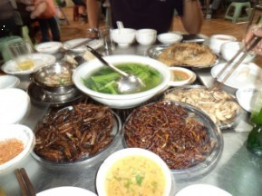
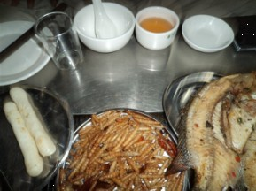
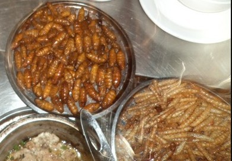
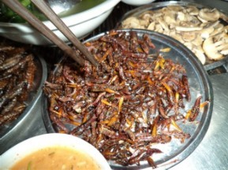

云南之旅3 品尝昆明小吃
#1 云南之旅3 品尝昆明小吃 作者：蓝天蓝 发表时间：2011-6-30 16:45:59
云南之旅3 品尝昆明小吃
时间2011.6.21.晚上22:50
飞机终于降落在昆明机场了，和尚老师由于在开会，没有能够来接机，发短信告诉我们，等我们安排好酒店以后，去酒店接我们出去品尝昆明小吃。我们到达酒店安排好一切，都已经是22：50了，我就给和尚老师发去短信，告诉和尚老师我们酒店的具体位置，和尚老师回短信：收到，马上就到，预计20分钟车程，正好有你们有间隙收拾一下，到了给你们电话，一起夜宵。
看到马上要跟和尚老师见面了，心情还是有些激动，虽然在和尚老师的空间看到过照片，在家族群里面聊天的时候，也不少， 现在要见到真人了，还是有点激动。23:20和尚打电话说到达酒店门口了，我们就从酒店下来，去酒店门口见面了，酒店门口就和尚老师一辆汽车，和尚老师看到我们从酒店出来，也从车上下来了，说：咱们先拥抱一下。然后我们就上车，和尚老师既当司机又当导游了，在去品尝小吃的路上，嘴就一直没有停，给我们介绍当地的风俗人情。
大理的洋人街是比较出名的地方，里面卖的都是大理的一些土特产和小手工艺品，如果有自己喜欢的可以买一些带回去。大理的红龙井也是比较有名的。还有大理的梅子，可以自由品尝，梅子酒也是免费品尝的，品尝以后，如果喜欢就买，不喜欢就不用买。还有丽江的四方街，里面有个原创音乐吧，是值得一去的地方,音乐吧里面的人可以现场用各种乐器为你演奏音乐，很是不错的，再往里面走，就有一个叫做:千里走单骑 的地方，大家可以在里面跟当地的居民对歌。还有就是有一种叫做洞经的，可以听一下，是天籁之音，是口传心教的，没有文字资料记载的。丽江的东八木盘，是纯手工艺品，雕工细腻，可以买一些留作纪念，还有羊皮画和蜡染，都是丽江特色产品，价格也不贵。和尚老师是滔滔不绝的给我们介绍着，我也是只记住这些。
在和尚老师介绍的时候，我们到了品尝小吃的地方，要下车往里面走一段路程才能到达。在这个时候，和尚老师又开始介绍这些小吃的名字: 竹虫、蚕蛹、水蜻蜓、蚂蚱、......听着这些名字我都不敢吃，你猜和尚老师怎么说：来了就要品尝一下，不吃不行，要挑战一下自己。哎，没有办法，心想吃就吃呗，我就说: 争着眼睛不敢吃，我就闭着眼睛吃。到了里面，和尚老师果然点的都是这些虫子

左边：水蜻蜓 中间绿色的汤菜是：苦菜 右边:蚂蚱

左边:饵块 中间：竹虫 右边：罗非鱼

上面的是： 蚕蛹 下面的是：竹虫

上面是烤蘑菇 下面的是蚂蚱
大家看着敢吃吗？呵呵
我是都品尝了一下，味道还真是不错，挺好吃的。在我品尝的时候，隔壁桌子的人还唱起了祝酒歌，很是好听。这个时候和尚老师就又给我们介绍了敬酒的一些小常识：当地居民会拿一些牛角杯，从大到小，让你自己选择酒杯，然后要把酒一
#2 RE:云南之旅3 品尝云南小吃 作者：梧桐风 发表时间：2011-6-30 17:53:35
通过手机回复：那是美食啊！！！
#3 RE:云南之旅3 品尝云南小吃 作者：离子阵阵雨 发表时间：2011-6-30 17:55:59
通过手机回复：我肯定吃不下去。。。
#4 Re:云南之旅3 品尝云南小吃 作者：老黄 发表时间：2011-6-30 18:14:48
高蛋白美食，云南十八怪之一。#5 Re:云南之旅3 品尝云南小吃 作者：掌棋宣传员 发表时间：2011-6-30 19:17:24
 佩服
佩服
#6 Re:云南之旅3 品尝昆明小吃 作者：陨落之城 发表时间：2011-7-1 0:26:03
和尚老师，这个称呼好奇怪。#7 RE:云南之旅3 品尝昆明小吃 作者：离子阵阵雨 发表时间：2011-7-1 1:44:00
通过手机回复：不是和尚。。。是和，尚老师。。
#8 Re:Re:云南之旅3 品尝昆明小吃 作者：蓝天蓝 发表时间：2011-7-1 10:27:34
引用：
原文由 陨落之城 发表于 2011-7-1 0:26:03 :
和尚老师，这个称呼好奇怪。
和尚老师 网名叫 玄奘 ，我们家族的人就称呼为 和尚老师了
#9 Re:云南之旅3 品尝昆明小吃 作者：被感动的人 发表时间：2011-7-1 12:15:30
见过别人吃，我自己不敢吃~
ps：我也有个姐姐叫我悟空~有好几年的交情了，工作上对我帮助很大 我俩经典对答是：
我俩经典对答是：
悟空——
师——傅——！！！！！！！！！！！！
#10 Re:云南之旅3 品尝昆明小吃 作者：掌棋如烟 发表时间：2011-7-4 8:47:18
这太可怕了.......